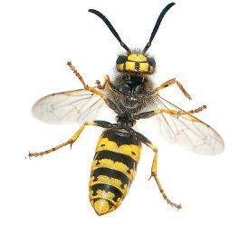
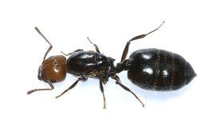

Picaduras y mordeduras
Que hacer en caso de picaduras de insecto
Las mordeduras y picaduras de insectos pueden causar una reacción cutánea inmediata. Las mordeduras de las hormigas rojas y las picaduras de abejas, avispas y avispones generalmente son dolorosas.
Es más probable que las picaduras de mosquitos, pulgas y ácaros causen picazón antes que dolor. Las picaduras de insectos y arañas causan más muertes por intoxicación que las mordeduras de serpientes
1 Retira el aguijón si está presente raspando con una navaja o algún otro objeto de borde recto. No utilice pinzas, ya que éstas pueden apretar el saco del veneno y aumentar la cantidad de veneno secretado.
2 Lava muy bien el área afectada con agua y jabón. Aplica hielo (envuelto en un trozo de tela) en el sitio de la picadura por 10 minutos, retírelo por 10 minutos y repite el proceso.
3 Si es necesario, administra un antihistamínico o aplica cremas que reduzcan la picazón. NO apliques torniquetes, y NO le administres a la persona estimulantes, ácido acetilsalicílico (aspirina) ni cualquier otro medicamento para el dolor, a menos que el médico lo prescriba.
4 Durante los siguientes días, esté atento a señales de infección (como aumento del enrojecimiento, hinchazón o dolor).

Pide ayuda médica urgente si se presentan los siguientes síntomas:
- Dificultad para respirar, respiración entrecortada o sibilante
- Hinchazón en cualquier parte de la cara o en la boca
- Opresión en la garganta o dificultad para deglutir
- Sensación de debilidad
- Tornarse morada